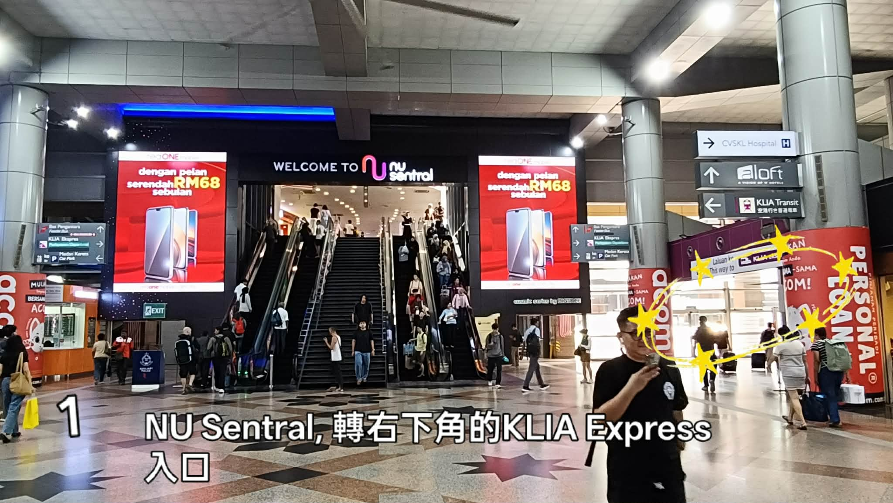
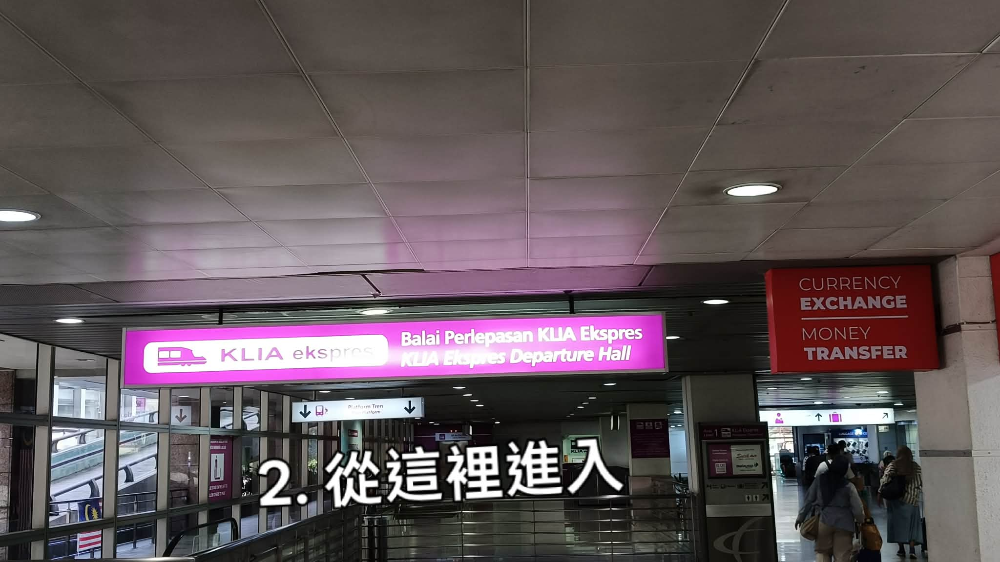
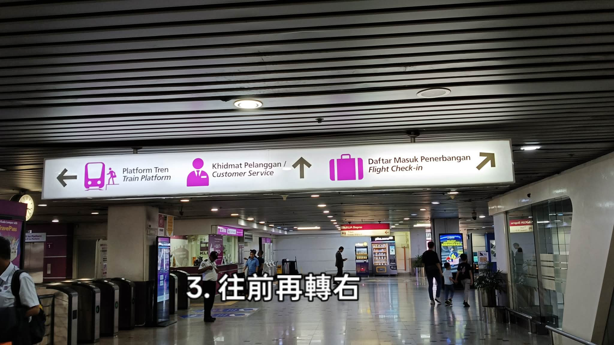
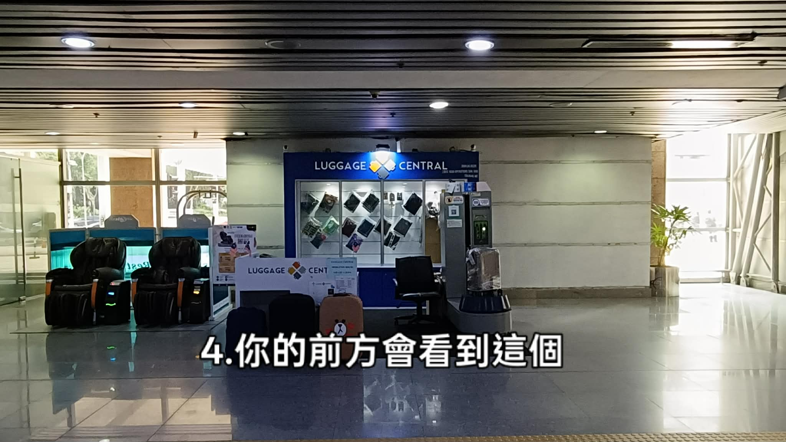
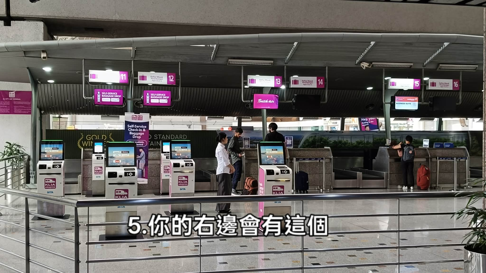

KL Sentral · 圖解路線
五個步驟，照著每一張現場照片走就不會迷路。
Five photo steps from the NU Sentral concourse to the KL City Air Terminal check-in counters.

先讓自己站到「WELCOME TO NU SENTRAL」這面大螢幕與手扶梯的正前方，這是 KL Sentral 主大廳最好認的地標。
背對售票大廳、面向手扶梯後，往右前方（照片中星星閃爍的位置）走過去，那裡就是紫色的 KLIA Ekspres 通道口，地上牌子寫著 this way to KLIA Ekspres。

走到這面亮粉紅色招牌 Balai Perlepasan KLIA Ekspres／KLIA Ekspres Departure Hall 就對了，直接從招牌下方走進去。
招牌下方還有一塊小指示牌寫 Platform Tren / Platform，箭頭朝下——那是往月台的手扶梯，先不要下去，我們要先辦登機手續。

進來後抬頭會看到一面白色指示牌，上面有三個方向：
← Train Platform 月台 · ↑ Customer Service 客服 · ↗ Flight Check-in 登機報到
我們要的是右上角的 Daftar Masuk Penerbangan / Flight Check-in，所以先往前直走，再轉右。左邊的閘門是等一下驗票進月台用的，辦完登機再回來。

轉右之後，前方會出現藍色招牌的 LUGGAGE CENTRAL（賣行李箱、行李配件，也提供行李打包服務），左邊擺著兩台按摩椅。
看到它就表示沒有走錯，繼續往前，櫃檯區就在下一個轉角。

到了！右手邊就是 KL City Air Terminal 市區預辦登機區，粉紅色牌子標著 11 到 16 號櫃檯。
前排四台是 Self-Service Check-in & Baggage Drop 自助機（Malaysia Airlines、Batik Air、Firefly 等），可以自己列印登機證與行李條；需要人工協助就走到後方的 11 / 12 Self-Service Baggage Drop、13 Batik Air、15 / 16 等櫃檯。
行李寄掛完成後，原路走回步驟 3 的閘門，刷票下到月台搭 KLIA Ekspres 即可——接下來就可以空手去機場了。